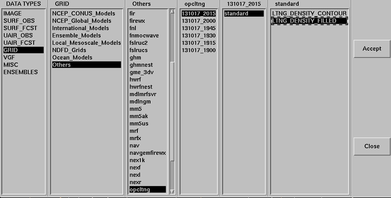
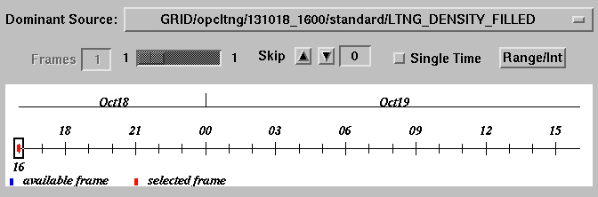
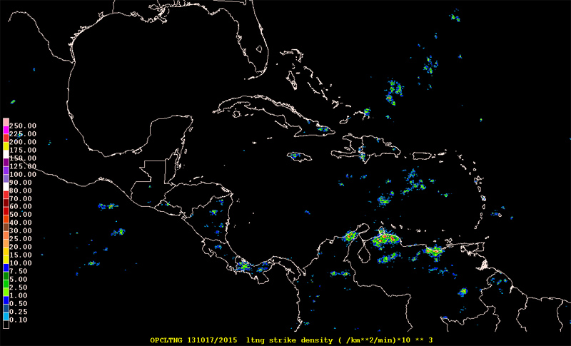
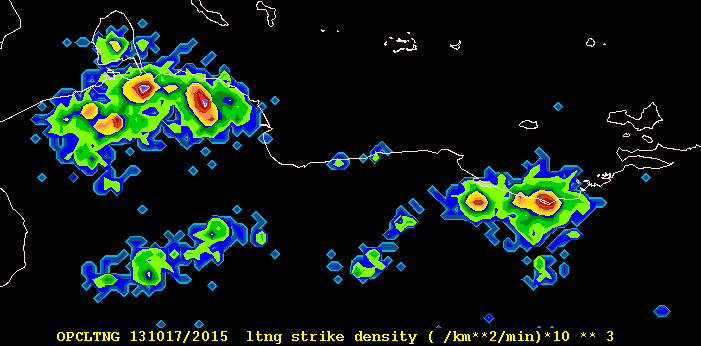

Any GEMPAK grid file can be directly read and used by the GDFILE definition in the GD comman line programs. NMAP2 requires entries in two tables in order for load, view, loop and export new grids.
The Ocean Prediction Center lightning strike density fields are provided as grib2 and GEMPAK grid files, each with a single grid, parameter name LTNG. Like any GEMPAK grid file they can be directly defined by GDFILE in any of the GD programs.
Using the OPC Lightning Strike Density Grids as an example, each file contains a single grid with parameter name LTNG. For the two restore files provided by OPC, we add entries to mod_res.tbl.
! PRODUCT NAME PATH/FILENAME GROUP MODELS
LTNG_DENSITY_CONTOUR $NMAP_RESTORE/stnd/ltng_density_contour standard opcltng
LTNG_DENSITY_FILLED $NMAP_RESTORE/stnd/ltng_density_filled standard opcltng
Unlike datatype.tbl, the columns in mod_res.tbl are not in fixed locations.
PRODUCT NAME as it is to appear in NMAP2PATH/FILENAME is the path to the GEMPAK nts file that NMAP2 will use for this grid.GROUP name under which the product is to appearMODELS is a list of models for which this restore file will appear, in this case only one.If you want to use an existing restore file, it's as easy as copying the name from another entry in datatype.tbl.
If you want to add a restore file, you need to move it to the PATH/FILENAME defined for the grid.
The second file to edit is datatype.tbl. An entry must exist with the same model name as defined in mod_res.tbl. For lightning strike density grids, the OPCLTNG entry is:
!FILE TYPE |PATH |FILE TEMPLATE |CATEGORY|SUBCAT |#FRM|RANGE |INTRVL|BIN HRS |MATCH
!(12) |(25) |(48) |(8) |(8) |(4) |(6) |(6) |(21) |(6)
! | | | | | | | |
OPCLTNG $MODEL/opcltng YYYYMMDDHHNN.30.grd CAT_GRD SCAT_ANL -1 720 1 OFF/0/0 4
You can scroll to the right inside the "code window" above to see (and Copy/Paste) the entire table entry. The columns are fixed, unlike mod_res.tbl, so you must use standard formatting within this file. Use other entries as a guide when adding a new line.
PATH is where the OCP lightning GEMPAK grid files are stored.FILE TEMPLATE is the format of grid file naming. For example, YYYYMMDDHHNN.30.grd for files named 201310172030.30.grd for 2030 UTC October 17 2013.CAT_GRD is for NMAP2 grid menus. SCAT_ANL is for analysis subcategoryAfter making the above table additions, re-start NMAP2 and open the data loader from GRID -> Others -> opcltng -> date/time -> standard ->

In the data time selection window you will see three times

Select LOAD and adjust the Map to outside North America if there are no visible contours of lightning strike density.

For the above colored plot, $NMAP_RESTORE/stnd/ltng_density_filled
!
! Restore File : ltng_density_filled
!
! Log:
! M.Mainelli/TPC 09/2004 Initial creation
! J.M.Sienkiewicz/OPC 10/2008 adapted to colors for altimeter wave heights
! J.M.Sienkiewicz/OPC 2/2013 adapted for display of ltng density 10**3
!
GLEVEL 0
GVCORD none
PANEL 0
SKIP 0
SCALE 3
GDPFUN ltng
TYPE f
CONTUR 0
CINT
LINE
FINT 0.10;0.25;0.5;1;2.5;5;7.5;10;15;20;25;30;40;50;60;70;80;90;100;125;150;175;200;225;250
FLINE 0;26;24;4;21;22;23;4;20;19;10;9;8;16;15;14;13;31;28;29;30;31;20;13;7;11
HILO 0
HLSYM 0
CLRBAR 1
WIND
REFVEC
TITLE 5/1/~ ltng strike density ( /km**2/min)*10 ** 3
TEXT 1/21/1/hw
CLEAR yes
STNPLT
SATFIL
RADFIL
STREAM
POSN 4
COLORS 2
MARKER 2
GRDLBL 5
LUTFIL none
FILTER yes
This nts file will draw color-filled contours for lightning strike density in units strikes per square kilometer per minute: (/km**2/min)*10**3 in GEMPAK.

In GDINFO you can see the contents of a lightning density
GDFILE = 201310171800.30.grd
LSTALL = YES
OUTPUT = T
GDATTIM = all
GLEVEL = all
GVCORD = all
GFUNC = all
After running GDINFO we see the grid navigation/ Notice the grid size.
GRID FILE: 201310171800.30.grd
GRID NAVIGATION:
PROJECTION: CED
GRID SIZE: 34761460
LL CORNER: -25.00 110.00
UR CORNER: 80.00 0.00
GRID ANALYSIS BLOCK:
ANALYSIS TYPE: BARNES
DELTAN: 4.000
DELTAX: -9999.000
DELTAY: -9999.000
Number of grids in file: 1
Maximum number of grids in file: 2000
NUM TIME1 TIME2 LEVL1 LEVL2 VCORD PARM
1 131017/1800 0 NONE LTNG